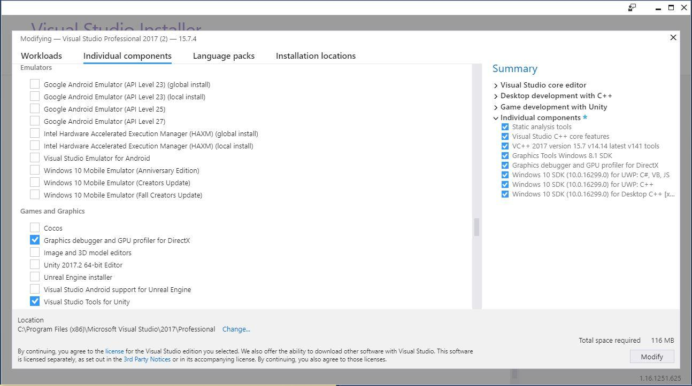
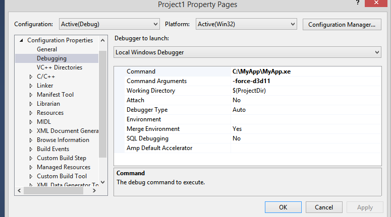
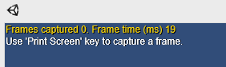
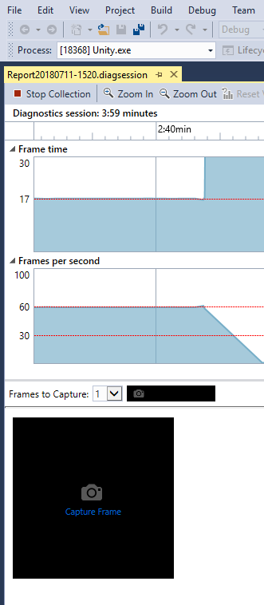
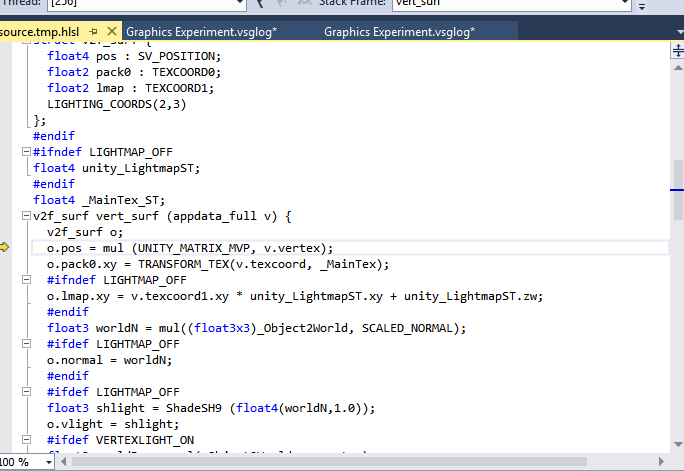

Use the Graphics Debugger in Microsoft Visual Studio (2012 version or later) to capture individual frames of applications for debugging purposes, from platforms like Unity Editor, Windows Standalone or Universal Windows PlatformAn IAP feature that supports Microsoft’s In App Purchase simulator, which allows you to test IAP purchase flows on devices before publishing your application. More info
See in Glossary.
To install the Graphics Debugger in Visual Studio:
Go to Tools > Get Tools and Features 
On the Individual components tab, scroll to Games and Graphics and check the box for Graphics debugger and GPU profiler__ for DirectX__
Click Modify
Wait for installation, then follow the instructions to restart your computer
You should use a built version of your Unity application to capture frames, rather than a version running in the Unity Editor. This is because the Editor might have multiple child windows open at once, and the Graphics Debugger might capture a frame from an unintended window.
To use the Graphics Debugger on either of these two platforms, you need to create a dummy Visual Studio Project:
Launch Visual Studio 2017
Go to File > New > Project > Visual C++ > Empty Project
Go to Project > PropertiesA generic term for the editable fields, buttons, checkboxes, or menus that comprise a component. An editable property is also referred to as a field. More info
See in Glossary > Configuration Properties > Debugging
In the Command field, replace $(TargetPath) with the path to the Unity Editor or Windows Standalone (for example, C:\MyApp\MyApp.exe)
If you want to force Windows Standalone or Unity Editor to run under DirectX 11, select Command Arguments and type -force-d3d11. 
Go to Debug > Graphics > Start Graphics Debugging
If everything is configured correctly, Unity displays the following text in the top-left corner of the application: 
To capture a frame, use the Print Screen key on your keyboard, or click the Capture Frame box on the left side of the Visual Studio interface. 
To debug a shader, you have to compile with debug symbols. To do that, you need to insert #pragma enable_d3d11_debug_symbols.
Your shader should look something like this:
Shader "Custom/NewShader" {
Properties {
_MainTex ("Base (RGB)", 2D) = "white" {}
}
SubShader {
Tags { "RenderType"="Opaque" }
LOD 200
CGPROGRAM
#pragma surface surf Lambert
#pragma enable_d3d11_debug_symbols
sampler2D _MainTex;
struct Input {
float2 uv_MainTex;
};
void surf (Input IN, inout SurfaceOutput o) {
half4 c = tex2D (_MainTex, IN.uv_MainTex);
o.Albedo = c.rgb;
o.Alpha = c.a;
}
ENDCG
}
FallBack "Diffuse"
}
Let’s create a basic example to show the entire process:
Create a new Unity project (see documentation on Getting Started).
In the top menu, go to AssetsAny media or data that can be used in your game or project. An asset may come from a file created outside of Unity, such as a 3D model, an audio file or an image. You can also create some asset types in Unity, such as an Animator Controller, an Audio Mixer or a Render Texture. More info
See in Glossary > Create > ShaderA small script that contains the mathematical calculations and algorithms for calculating the Color of each pixel rendered, based on the lighting input and the Material configuration. More info
See in Glossary > Standard Surface Shader. This creates a new shader file in your Project folder.
Select the shader file, and in the InspectorA Unity window that displays information about the currently selected GameObject, Asset or Project Settings, alowing you to inspect and edit the values. More info
See in Glossary window, click Open. This opens the shader file in your scripting editor. Insert #pragma enable_d3d11_debug_symbols into the shader code, underneath the other #pragma lines.
Create a new Material (menu: Assets > Create > MaterialAn asset that defines how a surface should be rendered, by including references to the Textures it uses, tiling information, Color tints and more. The available options for a Material depend on which Shader the Material is using. More info
See in Glossary).
In the Material’s Inspector window, select the Shader dropdown, go to Custom, and select the shader you just created.
Create a 3D cube GameObject (menu: GameObjectThe fundamental object in Unity scenes, which can represent characters, props, scenery, cameras, waypoints, and more. A GameObject’s functionality is defined by the Components attached to it. More info
See in Glossary > 3D ObjectA 3D GameObject such as a cube, terrain or ragdoll. More info
See in Glossary > Cube).
Assign your new Material to your new GameObject. To do this, drag the Material from the Project window to the 3D cube.
Build the project for Windows Standalone. Note that real projects might be so large that building them every time you want to debug a shader becomes inefficient; in that case, debug in the Editor, but make sure your capture has profiled the correct window.
Capture a frame, using the steps described above in the section Capture DirectX shaders with Visual Studio.
Your captured frame appears in Visual Studio. Right-click it, and select Pixel.
Click the play button next to the Vertex ShaderA program that runs on each vertex of a 3D model when the model is being rendered. More info
See in Glossary (highlighted in the screenshot above). This opens the vertex shader file:

There is a known issues while working with DirectX 12, in which the play buttons are not available, and the following error appears: This draw call uses system-value semantics that interfere with pixel history computation. If you experience this, use PIX to debug your shaders instead.
When you debug for Universal Windows Platform, you don’t need to create a dummy Visual Studio project, because Unity creates it for you.
Steps to capture a frame and begin shader debugging are the same as they are for the Unity Editor or Windows Standalone.
You can also use RenderDoc to debug shaders. In RenderDoc, you capture the SceneA Scene contains the environments and menus of your game. Think of each unique Scene file as a unique level. In each Scene, you place your environments, obstacles, and decorations, essentially designing and building your game in pieces. More info
See in Glossary from within the Editor, then use the standalone tool for debugging.
PIX works in a similar way to Visual Studio’s Graphics Debugger. Use PIX instead of the Graphics Debugger to debug DirectX 12 projects.
Did you find this page useful? Please give it a rating: